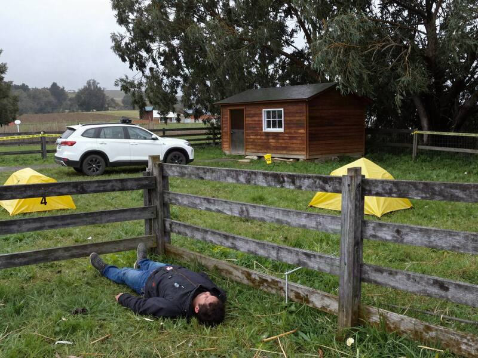
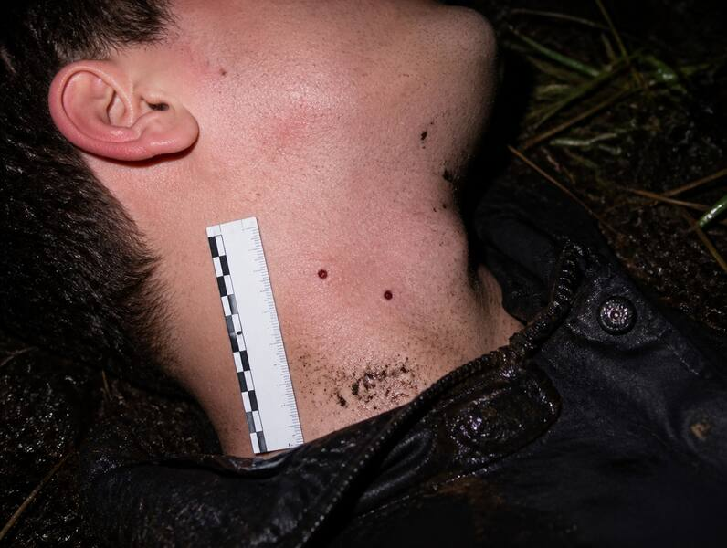
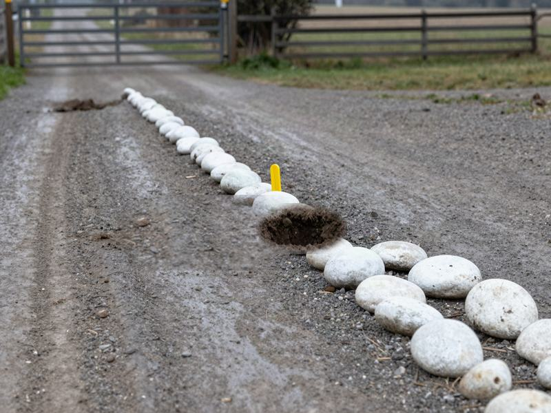
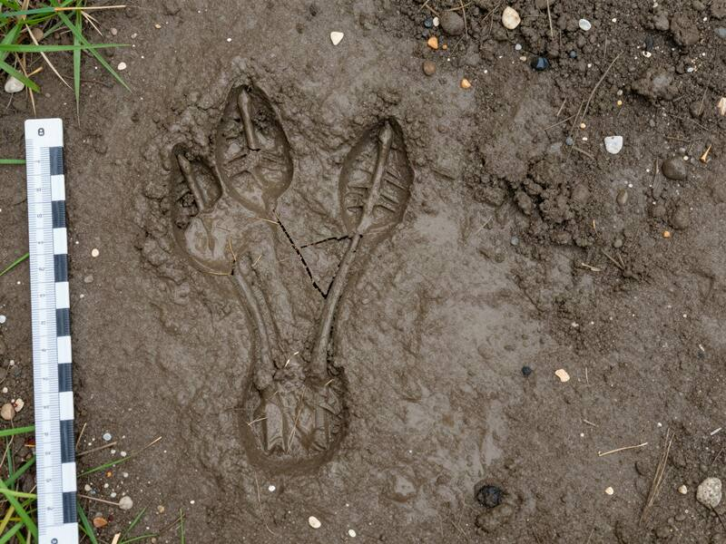
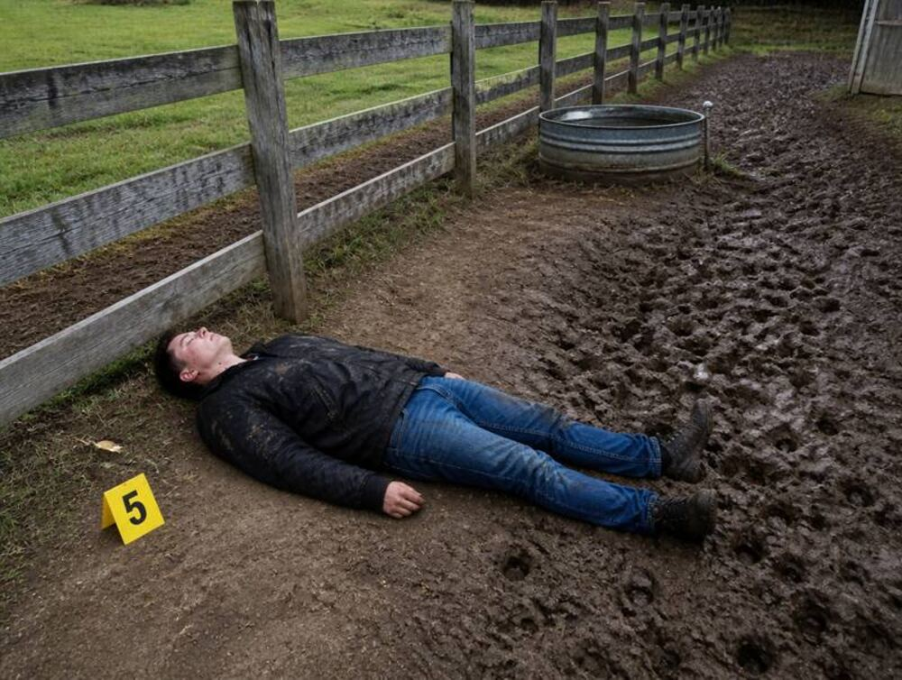
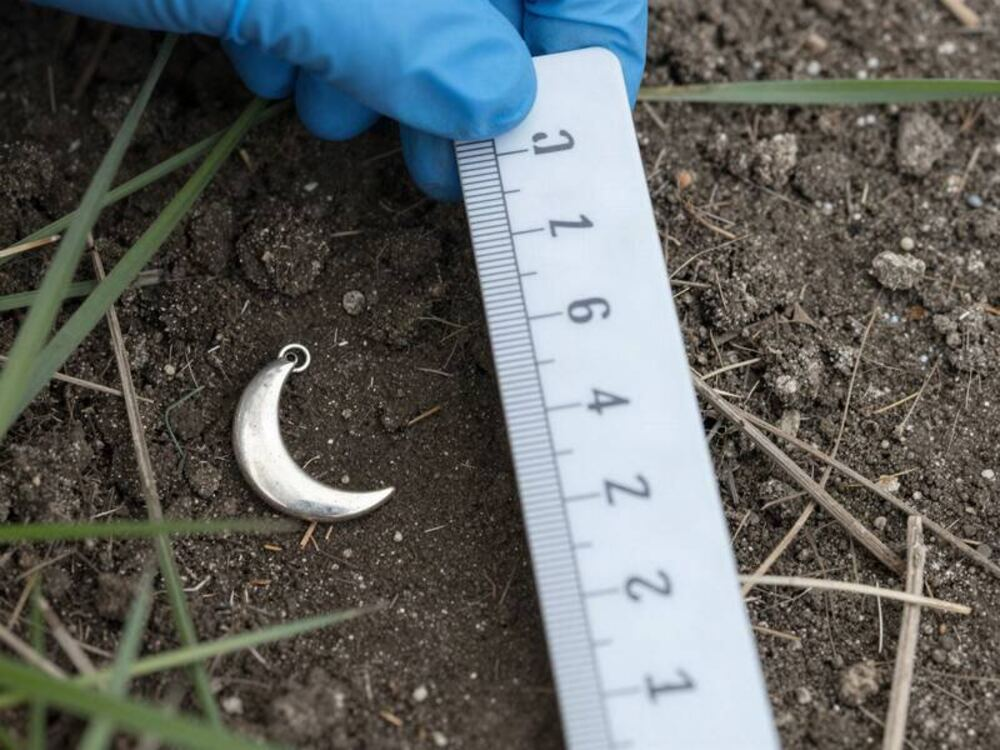

Laboratorio de Criminalística · Fotografía forenseSet fotográfico sitio del suceso · 31-10-2026
E02
Set fotográfico, 6 tomas

Foto 1 · Vista general. Cuerpo junto al corral, SUV de la víctima al fondo. La ropa está mojada por delante. La espalda y el suelo bajo el cuerpo están secos.

Foto 2 · Cuello, lado izquierdo. Dos perforaciones circulares de 4 mm, separadas por 4,5 cm entre centros. Bordes limpios, muy poco sangrado.

Foto 3 · Camino de acceso. Fila de 23 piedras de río pintadas de blanco. Entre la 11 y la 12 hay un hueco con la tierra descubierta: falta una piedra hace poco. Frente al portón, huellas de neumático borradas por la lluvia.

Foto 4 · Huella de tres dedos a 4 m del cuerpo, 14 cm de largo, parcialmente deformada por la lluvia. Se distingue una grieta diagonal en el dedo central.

Foto 5 · Huellas de perro de al menos tres animales, marcadas sobre el barro blando que hay a un lado del cuerpo, hacia el bebedero. El suelo bajo el cuerpo está seco; sobre la chaqueta quedaron huellas de barro.

Foto 6 · Bajo el cuerpo , al levantarlo: un aro plateado con forma de luna, seco, sobre tierra seca.
Perito fotógrafo del Laboratorio de Criminalística (LACRIM) TemucoTestigo métrico en tomas 2 y 4
 Open CaseEl Chupacabras de Labranza
Open CaseEl Chupacabras de Labranza